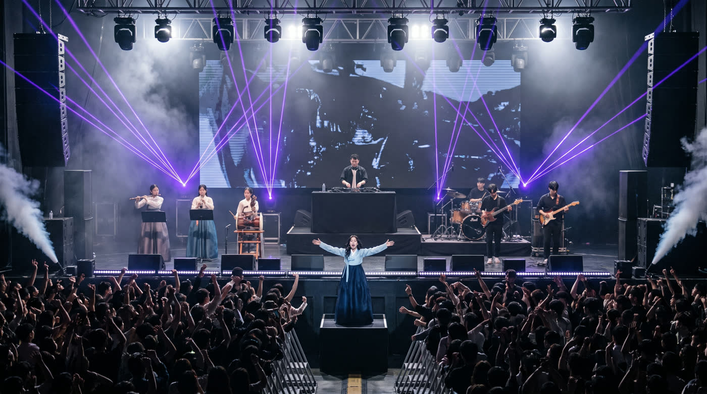
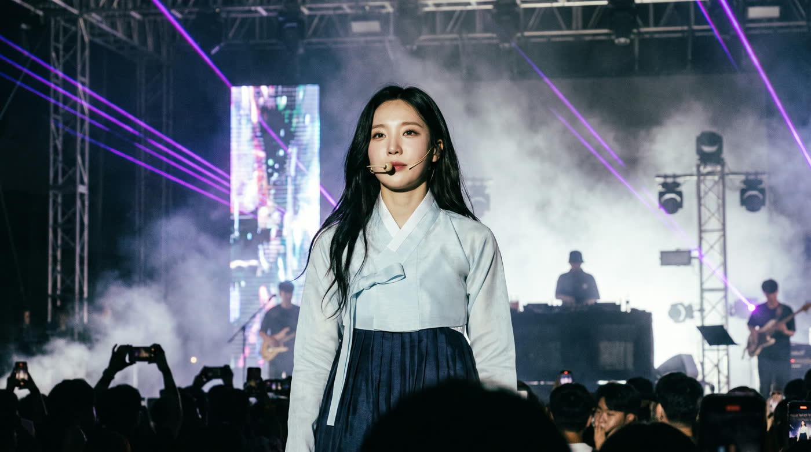
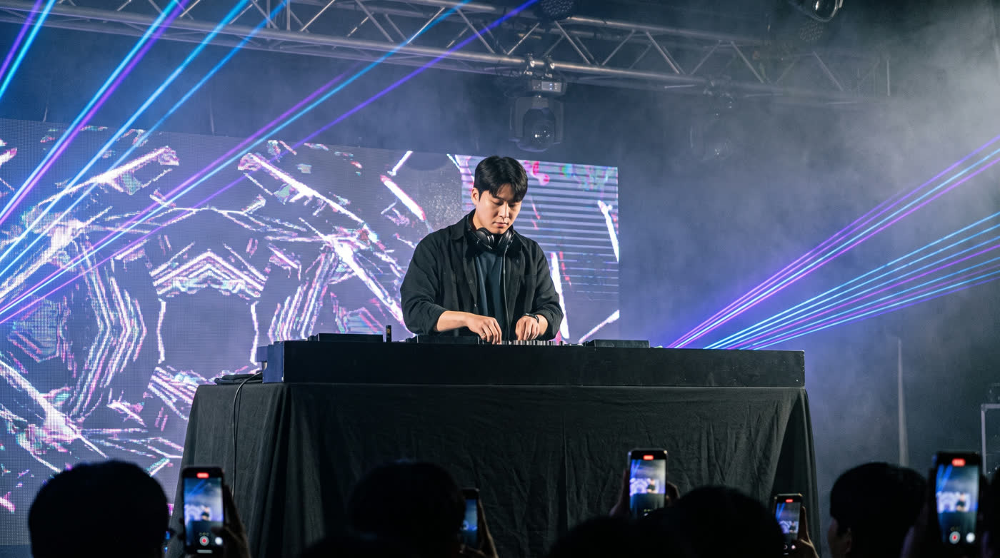
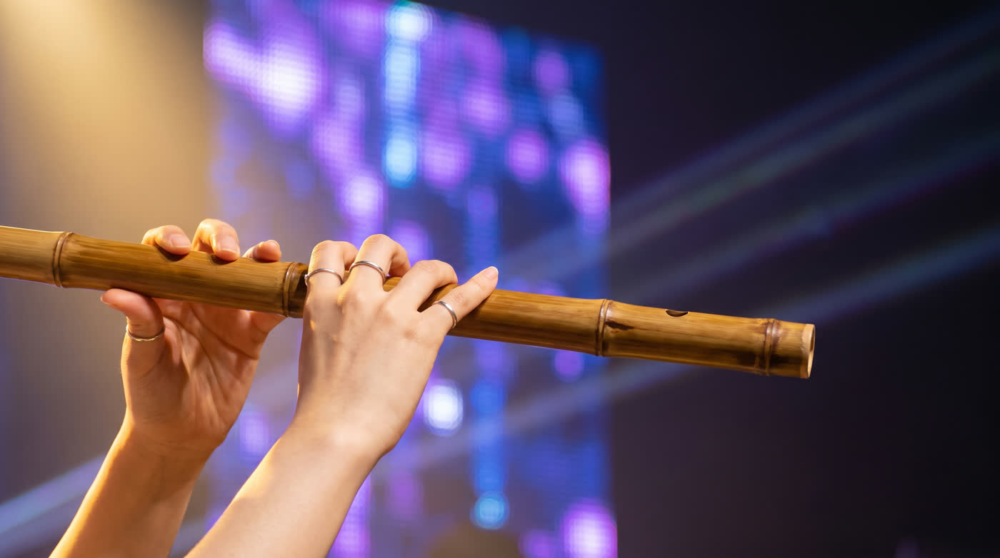
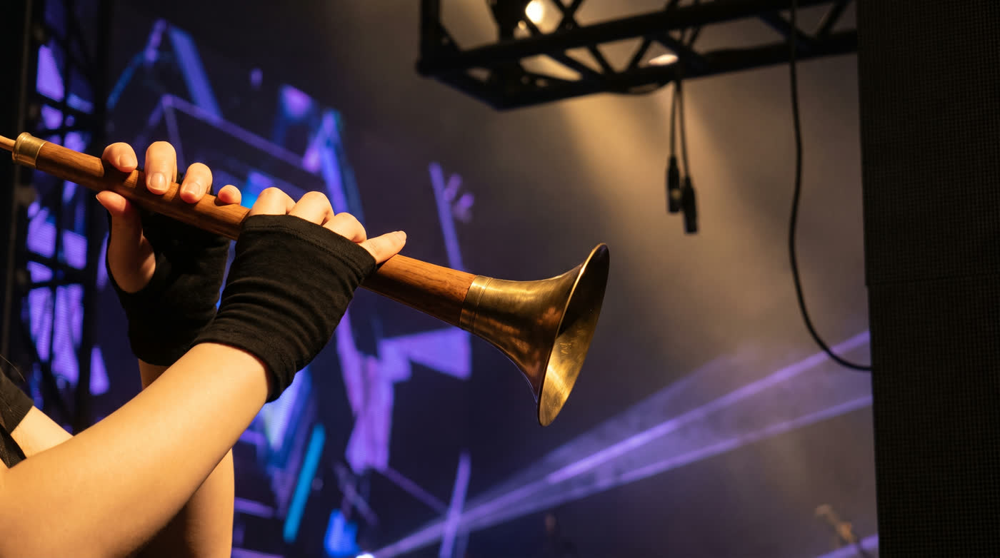

T06 강강술래 · 무대 키프레임
무대 여섯 장,
국악 EDM 콜라보 공연
대표님이 지적하신 여섯 곳을 프롬프트에 박고 다시 뽑았습니다. 이 여섯 장이 24컷 전부의 기준이 됩니다 — 여기서 통과하면 곧바로 영상 24컷을 발주합니다.
여섯 장 다 정해졌습니다. 대표님이 지적하신 열한 곳을 전부 정본에 박고 다시 뽑았습니다. 승인하시면 24컷을 발주합니다.
①대표님 지적 넷 — 어떻게 됐나
말씀하신 그대로를 facts.tsv 에 줄로 넣었고, 이제 기계가 발주 전에 대조합니다.
| 대표님 말씀 | 결과 |
|---|---|
| 무대 앞쪽이 너무 허전해다른 공연장 참고해서 장치를 추가해줘 | ✓ 모니터 웨지 · 라인어레이 · LED 띠 · 철제 바리케이드 · 스모크 제트 |
| 무대 위에서 관객을 바라본 방향에 서서 노래를 해야지 | ✓ 관객석에서 올려다보는 앵글 · 관중 뒤통수가 화면 아래에 깔린다 |
| DJ 가 앞으로 튀어 나와 있어전체 무대를 보면 가장 뒤인데 | ✓ 무대 맨 뒤 단 위 · 앞에는 가수 뒷모습만 |
| 젊은 여성들만 보이는데 손은 아니게 나왔어 | ✓ 젊은 여성의 손 — 반지 · 매끈한 손등 |
| 디제잉 인서트 / 앞에 여자 가수 옷이 바꼈어그냥 여자 가수 안나오게 바꾸자 | ✓ 화면에서 뺐다 — 무대 위에는 DJ 하나뿐 |
| 태평소 / 혼자만 장소가 클럽이야 | ✓ 무대 위에서 찍는다 — LED 월과 트러스가 배경을 채운다 |
| 여자 마이크 들고 있는 것 같은데확대해서 봐줘 | ✓ 맞았습니다 — 손 마이크였습니다. 세 번 못 막다가 «두 팔을 활짝 벌린다»는 자세로 끝냈습니다 |
| 뒤에 무대에는 없는 기타리스트가 나와애매하면 밴드도 무대에 포함해줘 / DJ 가운데 좌측 우측 한쪽에는 국악기밴드 한쪽은 현대악기밴드 | ✓ 막는 대신 정본에 넣었습니다 — DJ 가운데 · 좌 국악밴드 · 우 현대밴드 |
| 이어마이크?? 가수들 차는거라도 착용해야 리얼하지 않을까 | ✓ 이어셋을 답니다. 「마이크 금지」는 「손에 쥐는 마이크 금지」로 바꿨습니다 |
| 크게 잡힌 판은 너무 크게 나왔는데 현실성없게난 뒤에 전광판에 나오는 건줄 알았어 | ✓ 허리까지 잡은 판으로 갑니다. 「머리를 크게」를 「머리가 세로 1/4을 넘으면 실패」로 뒤집었습니다 |
| 테이블이 검은 천으로 덮여 있는데 이미지는 아니야 | ✓ 부스 앞을 바닥까지 검은 천으로 — 와이드와 같은 부스 |
| 더 줌해서 좌우 밴드랑 국악기 연주자들 안나오게 | ✓ DJ 혼자만 남게 좁혔습니다 |
| 옷이 바뀌는 문제가 있어 | ✓ DJ 옷을 와이드·인서트·컷 24개 전부에 적었습니다 (전엔 인서트에만 있었습니다) |
②무대 여섯 장
본편은 이 16:9 그대로 나갑니다(1920×1080). 자르는 건 세로판(쇼츠·릴스)을 만들 때뿐이고, 그때 가운데 32%만 남습니다 — 그래서 인물이 가운데에 있어야 합니다.

↻네 번 다시 뽑았습니다. 손 마이크가 세 번 나왔는데, 「없다」로도 「두 손이 비었다」로도 안 됐습니다. 원인은 크기였습니다 — 와이드에서 인물이 작으면 이어셋이 안 보여 모델의 「가수=마이크」 습관이 이깁니다. 손에 자세를 주니(두 팔을 어깨 높이로 활짝) 끝났습니다.

✓대표님이 고르신 판입니다. 이어셋을 차고 두 손이 비었습니다. 뒤로 무대 깊이가 열려 있어 합성처럼 보이지 않습니다 — 크게 잡은 판은 「뒤 전광판에 나오는 줄 알았다」는 지적을 받았습니다.

✓DJ 혼자입니다. 부스는 와이드와 같은 검은 천으로 덮었고, 좌우 밴드는 화면에서 뺐습니다. 데크 앞면의 상표는 「앞면은 이음매 없는 검은 띠」로 적으니 사라졌습니다 — 네 번 만에 잡았습니다.

↻다시 뽑았습니다. 처음엔 손이 다섯 개에 대금이 두 개였습니다. 영어로 two young women's hands 라고 적었더니 「젊은 여자 둘의 손」으로 읽혔습니다. 「한 여자의 두 손」으로 고쳤습니다.

↻다시 뽑았습니다. 대표님 말씀대로 혼자만 클럽이었습니다. 배경을 «어둡다»로만 적었더니 클럽 플로어가 된 것입니다. 「무대 위에서 찍는다 — LED 월과 트러스가 배경을 채운다」로 고쳤습니다.

↻다시 뽑았습니다. 처음엔 팔이 셋이었습니다. G1 과 같은 원인·같은 처방입니다.
③이 여섯 장으로 24컷을 만듭니다
179.80초 · 빈 구간 0.000초 · 겹침 0.000초. 컷 하나 평균 7.49초.
| 무대 | 컷 | 무엇에 쓰나 |
|---|---|---|
| F | 10컷 | 립싱크 — 가사가 나오는 모든 구간 |
| W | 7컷 | 후렴·드랍 — 관중이 한꺼번에 뛴다 |
| D | 3컷 | 간주·빌드 — 페이더를 올린다 |
| G | 4컷 | 국악기 — 인트로·간주·아웃트로 |
④돈
오늘 무대를 여러 번 다시 뽑았습니다 — 대표님 지적이 나올 때마다 정본을 고치고 다시 걸었습니다. 24컷은 요청초 × 1.2 × $0.05 로 계산한 값입니다.
⑤대표님이 정하실 것
여섯 장 다 정해졌습니다. 남은 건 발주 승인 하나입니다.
가 — 24컷 발주 ($11.34)
이 여섯 장을 기준으로 24컷을 뽑습니다. 확정값 36줄이 24컷 프롬프트에 다 들어가 있는 것을 기계가 확인했습니다.
나 — 아직 걸리는 데가 있다
무대 이름(W · F · D · G1 · G2 · G3)과 한 줄만 주십시오. 장당 2cr.